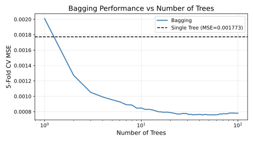

Lecture 16: Bagging and Random Forests
Learning Objectives
By the end of this lecture, you should be able to:
- Define an ensemble method
- Derive the connection between the bootstrap and variance reduction
- Implement the bagging and random forest algorithms in pseudocode
- Articulate advantages and disadvantages of these methods beyond improving accuracy (e.g., uncertainty quantification, computational trade-offs, etc.)
Motivation
In the last lecture, we began our foray into computation/simulation-based approaches to learning.
We introduced the bootstrap as a mechanism for quantifying uncertainty with minimal assumptions*** about the data-generating distribution.
Warning***The Fundamental Assumption of The BootstrapThe only major assumption we made when introducing the bootstrap (beyond our standard i.i.d. data assumption) is that the empirical distribution of our training sample is a reasonable approximation of the true (unknown) data-generating distribution.
What are conditions that might make this assumption invalid?
- Small sample size
- High-dimensional covariate space
- Rare examples
- Heavy-tailed distributions
- Violations of the i.i.d. assumption (e.g. biased sampling, time series data, etc.)
In this lecture, we will use the bootstrap (and other computation/simulation-based techniques) as a black-box mechanism for variance reduction.
In particular, we will use the bootstrap (and other sampling techniques) to construct ensembles of predictive models that, when combined, have lower variance (and thus lower risk) than any individual model in the ensemble.
These techniques are extremely useful for reducing the variance of non-closed-form predictive models, such as decision trees, where our standard variance reduction techniques (e.g. ridge regularization, lasso, etc.) do not apply.
Ensemble Methods
An ensemble is a collection of predictive models whose individual predictions are combined in some way (e.g., by averaging or majority vote) to produce a final prediction.
For example, let’s assume that we have \(m\) different predictive models, \(\hat{f}^{(1)}(X), \hat{f}^{(2)}(X), \ldots, \hat{f}^{(m)}(X)\), each of which yields a prediction \(\hat Y^{(i)}\) of the response associated with \(X\).
\[\begin{align*} \hat Y^{(1)} &= \hat{f}^{(1)}(X) \\ \hat Y^{(2)} &= \hat{f}^{(2)}(X) \\ &\vdots \\ \hat Y^{(m)} &= \hat{f}^{(m)}(X) \end{align*}\]
Importantly, each of the individual models in the ensemble need to be different from one another. (We’ll see why in a second.) There are many mechanisms to achieve this diversity:
TipHow Can we Create Diverse Models?There are many possible answers. Here’s just a few that come to mind:
- Train the same predictive model (e.g. OLS) on different training samples. These training samples can be subsets of the original data, for example.
- Train the same predictive model (e.g. OLS) on different subsets of the covariates.
- Train different types of predictive models (e.g. decision trees, OLS, ridge regression, k-nearest neighbors, etc.) on the same training data.
- Vary the hyperparameters of the same predictive model (e.g. ridge regression with different values of \(\lambda\)) on the same training data.
Importantly, all of the supervised models/training procedures we’ve studied so far are deterministic given the same training data and hyperparameters. Therefore, we cannot simply re-train the same predictive model on the same data and expect to get different models.
The ensemble prediction \(\hat f_\mathrm{ens}(X)\) is given by averaging the predictions of the individual models:
\[ \hat{f}_{\text{ens}}(X) = \frac{1}{m} \sum_{j=1}^m \hat Y^{(j)} = \frac{1}{m} \sum_{j=1}^m \hat{f}^{(j)}(X) \]
In general, we’ll see that ensembles have lower risk than individual models in the ensemble. Whether this reduction in risk comes from lower bias or lower variance depends on the component models in the ensemble and how they’re constructed.
Today, we’ll learn about two procedures for constructing ensembles (bagging and random forests) that yield a reduction in variance.
Intuition: Why Would Ensembles Be Better Than Single Models?
- Intuitively, a good ensemble should be composed of accurate models that make diverse errors.
- Imagine you are doing bar trivia with a team of friends. Each of you has some knowledge about the trivia topics, but none of you is an expert in all of them.
- You might make errors on the music questions, while friend A makes errors on the history questions, and friend B makes errors on the sports questions.
- However, if you pool your knowledge together, you can cover each other’s weaknesses and answer more questions correctly as a team than any of you could individually.
- In this analogy, each friend is like a model in the ensemble.
How Ensembles Can Reduce Variance
- This intuition (models making diverse errors) can be made precise mathematically.
- However, these “errors” made by each of the models could either arise from component models with high bias or high variance.
- In this lecture, we’ll see why ensembles could reduce variance when the component models are high-variance estimators.
Setup: Models trained on Different Training Samples
Let’s imagine that we have \(m\) different training samples, \(\mathcal{D}_1, \mathcal{D}_2, \ldots, \mathcal{D}_m\), each of which is drawn independently from the same data-generating distribution.
We train full-depth decision trees on each of these training samples to get \(m\) different models, \(\hat{f}_{\mathcal{D}_1}(X), \hat{f}_{\mathcal{D}_2}(X), \ldots, \hat{f}_{\mathcal{D}_m}(X)\).
Each of these models is a high-variance estimator, meaning that small changes in the training data can lead to large changes in the fitted model.
Let’s compute the bias and the variance of the ensemble predictor:
\[ \hat{f}_{\text{ens}}(X) = \frac{1}{m} \sum_{j=1}^m \hat{f}_{\mathcal{D}_j}(X) \]
The bias of the ensemble predictor is the same as the bias of the individual model:
TipBias DerivationThe expected ensemble is exactly the same as the expected individual model:
\[\begin{align*} \mathbb{E}[\hat{f}_{\text{ens}}(X) \mid X] &= \mathbb{E}\left[\frac{1}{m} \sum_{j=1}^m \hat{f}_{\mathcal{D}_j}(X) \mid X\right] \\ &= \frac{1}{m} \sum_{j=1}^m \mathbb{E}[\hat{f}_{\mathcal{D}_j}(X) \mid X] \\ &= \mathbb{E}[\hat{f}_{\mathcal{D}_j}(X) \mid X]. \end{align*}\]
where the final equality follows from the fact that all of the \(\hat{f}_{\mathcal{D}_j}(X)\) are identically distributed and thus have the same expectation. Therefore, the bias of the ensemble is also the same as the bias of the individual model:
\[\begin{align*} \text{Bias}[\hat{f}_{\text{ens}}(X)] &= \mathbb{E} \left[ \mathbb{E}[\hat{f}_{\text{ens}}(X) \mid X] - \mathbb{E}[Y \mid X] \right] \\ &= \mathbb{E} \left[ \mathbb{E}[\hat{f}_{\mathcal{D}_j}(X) \mid X] - \mathbb{E}[Y \mid X] \right] \\ &= \text{Bias}[\hat{f}_{\mathcal{D}_j}(X)] \end{align*}\]
However, the variance of the ensemble predictor is reduced by a factor of \(m\) if the training samples are independent:
TipVariance DerivationConsider the variance of the ensemble predictor for a fixed \(X=x\):
\[ \mathrm{Var}[\hat{f}_{\text{ens}}(X) \mid X=x] = \mathrm{Var}[\hat{f}_{\text{ens}}(x)] = \mathrm{Var}\left[\frac{1}{m} \sum_{j=1}^m \hat{f}_{\mathcal{D}_j}(x)\right] \]
Note that when we fix \(X=x\), the only randomness remaining in \(\hat{f}_{\text{ens}}(x)\) comes from the randomness in the (independent) training samples \(\mathcal{D}_1, \ldots, \mathcal{D}_m\). Using the following statistical identities:
- \(\mathrm{Var}[aZ] = a^2 \mathrm{Var}[Z]\) for any random variable \(Z\) and constant \(a\); and
- if \(Z_1, \ldots, Z_m\) are independent random variables, then \(\mathrm{Var}\left[\sum_{j=1}^m Z_j\right] = \sum_{j=1}^m \mathrm{Var}[Z_j]\);
we have that
\[ \mathrm{Var}[\hat{f}_{\text{ens}}(x)] = \frac{1}{m^2} \sum_{j=1}^m \mathrm{Var}[\hat{f}_{\mathcal{D}_j}(x)] = \frac{1}{m} \mathrm{Var}[\hat{f}_{\mathcal{D}_j}(x)], \]
where the final equality follows from the fact that all of the \(\hat{f}_{\mathcal{D}_j}(x)\) are identically distributed and thus have the same variance. (If you’re struggling to remember these identities, try to prove them on your own! They’re straightforward to derive from the definition of variance (\(\mathrm{Var}[Z] = \mathbb{E}[(Z - \mathbb E[Z])^2] = \mathbb{E}[Z^2] - (\mathbb{E}[Z])^2\)) and linearity of expectation.)
Thus, the variance component of the risk, which now averages this variance over the distribution of \(X\), is also reduced by a factor of \(m\):
\[\begin{align*} \mathrm{Var}[\hat{f}_{\text{ens}}(X)] &= \mathbb{E} \left[ \mathrm{Var} [\hat{f}_{\text{ens}}(X) \mid X] \right] \\ &= \mathbb{E} \left[ \frac{1}{m} \mathrm{Var}[\hat{f}_{\mathcal{D}_j}(X) \mid X] \right] \\ &= \frac{1}{m} \mathbb{E} \left[ \mathrm{Var}[\hat{f}_{\mathcal{D}_j}(X) \mid X] \right] \\ &= \frac{1}{m} \mathrm{Var}[\hat{f}_{\mathcal{D}_j}(X)] \end{align*}\]
Thus, even though each individual model in the ensemble is a high-variance estimator, with a large enough ensemble (of models trained on independent training samples), we can reduce the variance of the ensemble predictor to be arbitrarily small!
\[ \mathcal{R}(\hat{f}_{\text{ens}}) = \text{Bias}[\hat{f}_{\mathcal{D}_j}(X)]^2 \quad + \underbrace{\frac{1}{m} \mathrm{Var}[\hat{f}_{\mathcal{D}_j}(X)]}_\text{goes to 0 with large enough $m$!} + \quad \text{irreducible noise} \]
We’ve seen the math, but why does the ensemble not overfit the training data, even though each individual model overfits?
Answer
The key is that each individual model is overfitting in different ways, because they are overfit to different training samples. Model \(i\) is both learning the true signal, as well as whatever noise happened to be in training sample \(\mathcal{D}_i\). When we average the predictions of all \(m\) models, the true signal is reinforced (since all models are trying to learn it), while the noise is averaged out (since the noise in each training sample is independent).
Bagging: Bootstrap Aggregating
In practice, we only have access to a single training sample \(\mathcal{D}\). However, using our knowledge from the last lecture, we can use the bootstrap to simulate having multiple training samples \(\mathcal{D}_1, \ldots, \mathcal{D}_m\) from our (true) training sample \(\mathcal{D}\)!
Given:
- A predictive modelling algorithm (e.g. decision trees)
- The ensemble size \(m\) (i.e. number of trees to train)
- A training sample \(\mathcal{D} = \{(X_i, Y_i)\}_{i=1}^n\)
For \(i \in 1, \ldots, m\):
- Draw a bootstrap sample \(\mathcal{D}_i\) (i.e. sample of size \(n\), with replacement) from \(\mathcal{D}\)
- Train \(\hat{f}_{\mathcal{D}_i}(X)\) (e.g. the decision tree) on \(\mathcal{D}_i\)
Make predictions using the ensemble predictor: \(\hat{f}_{\text{ens}}(X) = \frac{1}{m} \sum_{j=1}^m \hat{f}_{\mathcal{D}_j}(X)\)
This algorithm can be applied to any (high-variance) predictive modelling algorithm, but it is most commonly used with decision trees.
Why does this algorithm work?
- Under the fundamental assumption of the bootstrap, the empirical distribution of our training sample \(\mathcal{D}\) is a reasonable approximation of the true data-generating distribution.
- Therefore, bootstrap samples drawn from \(\mathcal{D}\) can be viewed as approximate (independent) training samples drawn from the true data-generating distribution.
The Bias and Variance of Bagged Trees
- While \(\mathcal{D}_1, \ldots, \mathcal{D}_m\) are approximately samples from the true data-generating distribution, they are not truly the same as independent samples from that distribution.
- How does this affect the bias and variance of the bagging ensemble?
- Let’s compare the bias/variance of bagged trees to a single decision tree trained on the original training sample \(\mathcal{D}\). (We will denote this single tree as \(\hat{f}_{\mathcal{D}}(X)\).)
Bias: \(\text{Bias}[\hat{f}_{\text{ens}}(X)] > \text{Bias}[\hat{f}_{\mathcal{D}}(X)]\), but (hopefully) not by much.
Why?
Since the bootstrap samples are drawn from the empirical distribution of \(\mathcal{D}\), they may not capture the true data-generating distribution perfectly. Therefore, the models trained on these bootstrap samples may have slightly higher bias than a model trained on the true data-generating distribution.Variance: \(\mathrm{Var}[\hat{f}_{\text{ens}}(X)] > \frac{1}{m} \mathrm{Var}[\hat{f}_\mathcal{D}(X)]\), but (hopefully) also not by much.
Why?
Since the bootstrap samples are drawn from the same training sample \(\mathcal{D}\), they are not truly independent. Therefore, the variance reduction achieved by bagging is not as large as it would be if the models were trained on independent training samples.However, even with these caveats, often \(\mathrm{Var}[\hat{f}_{\text{ens}}(X)] \ll \mathrm{Var}[\hat{f}_\mathcal{D}(X)]\), so the slight increase in bias is often worth the large decrease in variance!
Example
Let’s see what happens when we apply bagging to decision trees on the mobility dataset from earlier in the course, as we increase the number of bagged trees in the ensemble:

With a single bagged tree in our ensemble, the error is similar to that of a single decision tree (a little worse, due to the increase in bias from using bootstrap samples). However, as we increase the number of trees in the ensemble, the error decreases significantly, eventually leveling off at a value much lower than that of a single decision tree.
Advantages of Bagging
Bagged ensembles (especially bagged decision trees) would almost* be my go-to off-the-shelf predictive model if I had to pick just one, for several reasons:
Bagged Decision Trees are Hyperparameter-Free
Recall that the inputs to the bagging algorithm are:
- A predictive modelling algorithm (e.g. decision trees)
- The ensemble size \(m\) (i.e. number of trees to train)
- A training sample \(\mathcal{D} = \{(X_i, Y_i)\}_{i=1}^n\)
The only hyperparameters to tune are (1) the predictive modelling algorithm’s hyperparameters (e.g. max depth of decision trees) and (2) the ensemble size \(m\).
TipWhy Don’t We Have to Tune These Choices?Because bagging reduces variance so effectively, we don’t have to worry about tuning the predictive modelling algorithm’s hyperparameters to balance bias and variance. Therefore, we can just use full-depth decision trees (i.e. no hyperparameter tuning needed)!
Furthermore, we will get more variance reduction by increasing the ensemble size \(m\), so we can just set \(m\) to be however many trees we can afford computationally!
In practice, we can just set \(m\) to be a few hundred or a few thousand trees, and keep increasing it until the CV error stabilizes.
Bagged Decision Trees are Non-Parametric (and Universal Approximators)
- Max-depth decision trees will create a split for every unique data point in the (bootstrap) training sample.
- Thus, the complexity of bagged (max-depth) decision trees grows with the size of the training data.
- As we discussed in a previous lecture, an axis-aligned piecewise constant function (i.e. a decision tree) can approximate any continuous function arbitrarily well, given enough splits (i.e. enough data).
- Therefore, bagged decision trees are universal approximators, meaning that they can approximate any continuous function arbitrarily well, given enough data.
Uncertainty Quantification “For Free”
- Recall that the bootstrap can be used to approximate the variance of any quantity (with respect to the data-generating distribution).
- Since each model in the ensemble is trained on a bootstrapped sample of our training data, we can thus estimate \(\mathrm{Var}[ \hat{f}_{\mathcal D}(x) ] = \frac{1}{m-1} \sum_{i=1}^m \left( \hat{f}_{\mathcal{D}_i}(x) - \hat{f}_{\text{ens}}(x) \right)^2\) for any fixed set of test covariates \(x\).
- For a fixed \(x\), the only randomness in the quantity \(\hat{f}_{\mathcal D}(x)\) comes from the randomness in the training sample \(\mathcal D\).
- Therefore, the variance \(\mathrm{Var}[ \hat{f}_{\mathcal D}(x) ]\) measures how much the prediction at \(x\) would change if we had a different training sample.
- This variance is a measure of our uncertainty about the prediction at \(x\) due to limited training data.
- If a prediction at \(x\) has high variance, it means that our prediction is very sensitive to the training data, and thus we should be less confident in that prediction.
Bagged Decision Trees Give Us a Risk Estimate “For Free”
Because bootstrapping samples with replacement from the training data, on average, about 63% of the training data points appear in each bootstrap sample.
Therefore, for each individual \(\hat f_{\mathcal{D}_i}(X)\) in the bagged ensemble, about 37% of the training data points are “left out” of the bootstrap sample used to train that model. We refer to these left-out data points as the out-of-bag (OOB) samples for model \(i\).
Each data point \((X_j, Y_j) \in \mathcal D\) in the training data will be an OOB sample for about 37% of the models in the ensemble.
Therefore, we can use the OOB samples to estimate the prediction error of the bagged ensemble without needing to do cross-validation or hold out a separate validation set!
NoteOut-of-Bag Error EstimationFor each training data point \((X_j, Y_j) \in \mathcal D\):
Identify the subset of bootstrap samples \(S_j \subseteq \{ \mathcal{D}_i \}_{i=1}^m\) for which \((X_j, Y_j)\) is an OOB sample.
Compute the average prediction for \(X_j\) using the OOB models (i.e. the models trained on the bootstrap samples in \(S_j\)):
\[ \hat Y_j^{(\mathrm{OOB})} = \frac{1}{|S_j|} \sum_{\mathcal{D}_i \in S_j} \hat{f}_{\mathcal{D}_i}(X_j) \]
Estimate the risk as the average loss over all OOB predictions on the training set:
\[ \widehat{\mathcal{R}}_{\mathrm{OOB}} = \frac{1}{n} \sum_{j=1}^n L(Y_j, \hat Y_j^{(\mathrm{OOB})}) \]
- We can think of the OOB error as an approximation of the cross-validation estimate of risk. We are using the left-out samples from each bootstrap sample as a “validation set” for that model, just like we would in cross-validation.
- However, unlike cross-validation, we don’t need to retrain the models multiple times on different training/validation splits!
Random Forests
*I say that bagged decision trees would “almost” be my go-to off-the-shelf predictive model. My actual go-to model is a slight modification of bagged decision trees called random forests, which are one of the most popular and effective predictive modelling algorithms used in practice. I’d say that random forests are almost the best or second-best model on \(80\%\) of supervised learning problems.
Reducing Correlation Between Trees to Reduce Variance
If we had truly independent training samples for each tree in the bagged ensemble, the variance reduction over a single tree would be exactly \(1/m\).
However, because the bootstrap samples are correlated (they are all drawn from the same training sample \(\mathcal{D}\)), we don’t get this full variance reduction.
TipCorrelation Reduces Variance ReductionTo understand why correlation between the trees limits variance reduction, imagine that all of the bootstrap samples were nearly identical. Would we expect any variance reduction from bagging in this case?
Answer
No! If all of the bootstrap samples were nearly identical, then all of the trees in the ensemble would be nearly identical as well. Therefore, the ensemble predictor would be nearly identical to any individual tree in the ensemble, and we would not see any variance reduction.Therefore, if we can reduce the correlation between the trees in the ensemble, we can achieve even greater variance reduction than bagged trees. If this correlation reduction doesn’t increase the bias too much, then we can achieve even lower risk than bagged trees!
Reducing Correlation by Subsampling Covariates
- A simple way to reduce correlation between trees is to train each tree on a random subset of the covariates (without replacement).
- This way, even if two bootstrap samples are similar, the trees trained on those samples will be different because they will be splitting on different covariates.
- Since decision trees are greedy algorithms that split on the most informative covariates first, forcing each tree to consider only a random subset of covariates will lead to more diverse trees in the ensemble, without increasing the bias too much.
Given:
- A training sample \(\mathcal{D} = \{(X_i, Y_i)\}_{i=1}^n\) with \(p\) covariates
- The ensemble size \(m\) (i.e. number of trees to train)
For \(i \in 1, \ldots, m\):
- Draw a bootstrap sample \(\mathcal{D}_i\) (i.e. sample of size \(n\), with replacement) from \(\mathcal{D}\)
- Select a random subset of \(k = \sqrt{p}\) covariates from the \(p\) total covariates
- Train \(\hat{f}_{\mathcal{D}_i}(X)\) (e.g. the decision tree) on \(\mathcal{D}_i\), using only the selected \(k\) covariates for splitting.
Make predictions using the ensemble predictor: \(\hat{f}_{\text{ens}}(X) = \frac{1}{m} \sum_{j=1}^m \hat{f}_{\mathcal{D}_j}(X)\)
- The only difference between random forests and bagged trees is the random subset of covariates used for splitting in each tree.
Why \(k = \sqrt{p}\)?: This value of \(k\) has been theoretically shown to yield the best trade-off between bias and variance in practice. With this hyperparameter set, random forests (like bagged decision trees) have no hyperparameters to tune!
Summary
- Ensemble methods combine multiple predictive models to produce a final prediction.
- Bagging (bootstrap aggregating) uses bootstrap samples to create an ensemble of high-variance models, leading to significant variance reduction and lower risk.
- Random forests further reduce correlation between trees in the ensemble by training each tree on a random subset of covariates, leading to even greater variance reduction and lower risk.
- Both bagged decision trees and random forests are hyperparameter-free, non-parametric, and provide out-of-bag error estimates “for free”, making them powerful and convenient off-the-shelf predictive models.